Guide de Tempus pour Hero Wars Alliance
- Par : Alexandre Domingos. .
Le temps s'arrête pour Tempus, et pour vos ennemis aussi. En tant que héros de Soutien de la faction Voie de l'Éternité, Tempus plie les règles du combat elles-mêmes : il gèle les minuteries des compétences ennemies, leur retire des statistiques, isole leur combattant le plus dangereux et augmente la Santé maximale de ses alliés à des niveaux extraordinaires. Quand on connaît tous les secrets du passé et du futur, chaque mouvement sur le champ de bataille devient un coup de maître parfaitement calculé.
Ce guide complet couvre tout ce que vous devez savoir sur Tempus dans Hero Wars Alliance : ses compétences, ses choix de talismans, les priorités de skins, ses meilleures équipes, et la manière dont sa Relique Légendaire le transforme d'un excellent contrôleur en une force impossible à arrêter. Que vous soyez en train de le construire pour la première fois ou de l'améliorer avec de nouvelles compétences de Relique, ce guide affûtera votre stratégie et fera de Tempus la pièce maîtresse de votre composition.


📋 Sommaire de Tempus
- Qui est Tempus dans Hero Wars Alliance ?
- Évaluation globale de Tempus dans la méta
- Avantages et inconvénients de Tempus
- Comparaison des statistiques maximales des talismans de Tempus
- Guide des talismans de Tempus
- Meilleur skin pour Tempus
- Priorité d'évolution des artéfacts de Tempus
- Priorité d'évolution des glyphes de Tempus
- Synergies et meilleures équipes
Qui est Tempus dans Hero Wars Alliance ?
Tempus est un héros de Soutien de la ligne médiane appartenant à la faction Voie de l'Éternité, qui exploite le pouvoir du temps pour contrôler des champs de bataille entiers. Son arsenal combine contrôle de foule, debuffs et buffs d'équipe, ce qui en fait un héros qui renforce chacun de ses alliés tout en démantelant chaque plan ennemi. Sa Relique Légendaire ajoute de nouvelles dimensions offensives ainsi qu'un mécanisme défensif de contre-contrôle qui le rend vraiment exceptionnel avec un investissement élevé.

- Classe principale : Soutien
- Position : Ligne médiane
- Stat principale : Intelligence
- Faction : Voie de l'Éternité
- Rang d'équipement : 16
- Comment obtenir les Pierres d'âme : Événements spéciaux
- Synergie : Iris, Corvus, Phobos, Kayla, Aidan
- Tier list Hydra : À déterminer
Sa capacité unique à geler les temps de recharge des compétences ennemies avec Chronostase fait de lui l'un des héros les plus perturbateurs du jeu compétitif. Combiné à Flétrissement, qui réduit l'Attaque physique et la Santé maximale des ennemis, et à Paradoxe Temporel, qui accélère les alliés tout en ralentissant les ennemis et en augmentant leur Santé maximale, Tempus affaiblit simultanément l'équipe ennemie tout en renforçant la sienne.
La synergie avec Kayla et Aidan est particulièrement remarquable : Tempus augmente la Santé maximale des alliés grâce à Paradoxe Temporel, ce qui amplifie directement le Rituel du Phénix d'Aidan. Cela crée une réaction en chaîne de bonus de santé, de résurrections d'équipe et de pression soutenue extrêmement difficile à contrer pour les adversaires.
Avantages et inconvénients de Tempus — Hero Wars Alliance
✅ Avantages
- Chronostase arrête tous les ennemis en même temps et gèle les temps de recharge de leurs compétences, l'une des compétences de contrôle de foule les plus puissantes du jeu.
- Flétrissement réduit massivement l'Attaque physique et la Santé maximale des ennemis, neutralisant les héros de première ligne.
- Paradoxe Temporel augmente la Santé maximale et la vitesse des alliés tout en ralentissant tous les ennemis dans la zone d'effet.
- Excellente synergie avec la faction Voie de l'Éternité, Iris, Corvus, Phobos, ainsi qu'avec le duo Kayla+Aidan.
- La Relique Légendaire ajoute une aura de Pénétration magique (Champ Chrono) et un contre automatique au CC (Rebond Temporel), ce qui augmente fortement sa valeur avec davantage d'investissement.
❌ Inconvénients
- Sa position en ligne médiane l'expose aux dégâts de zone et aux attaques burst sans une première ligne solide.
- Ses dégâts sont modérés : c'est avant tout un contrôleur et un soutien, pas un principal infligeur de dégâts.
- Son plein potentiel exige un investissement dans la Relique Légendaire, ce qui coûte beaucoup de ressources.
- Il dépend de la composition d'équipe pour maximiser sa chaîne de contrôle et ses synergies basées sur la Santé.
Tempus — Comparaison des statistiques maximales des talismans
| Statistique | 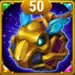 Talisman de Pérennité |
Talisman de Ponctualité |
|---|---|---|
 |
18,016 | 16,016 |
 |
2,832 | 2,832 |
 |
4,239 | 4,239 |
 |
900,348 | 1,081,848 |
 |
35,488 | 33,488 |
 |
195,705 | 189,705 |
 |
72,295.5 | 49,525.5 |
 |
58,471.9 | 56,471.9 |
 |
— | 6,571 |
Guide des talismans de Tempus Hero Wars Alliance
- Tempus possède 2 talismans, et vous devez choisir lequel équiper avant d'entrer en combat. Contrairement aux skins, pour lesquels vous recevez le bonus quelle que soit celle qui est active, seules les statistiques du talisman actuellement équipé s'appliquent au combat. Choisir le bon talisman peut faire une énorme différence selon les ennemis affrontés et le rôle que vous souhaitez donner à Tempus.
Talisman de Pérennité

- Emplacement principal : Intelligence +2,000
- Chaque point d'Intelligence accorde :
- +3 Attaque magique
- +1 Défense magique
- +1 Attaque physique (si l'Intelligence est la statistique principale du héros)
- Bonus total des emplacements de reroll : Armure +19,800 (somme des trois emplacements : 3 × 6,600)
- Ce talisman est idéal si vous voulez renforcer la puissance magique de Tempus tout en gagnant un peu de résistance physique grâce à l'armure supplémentaire. C'est un excellent choix contre les équipes axées sur les dégâts physiques.
|
Talisman de Pérennité |
Stat principale totale |
|---|---|
|
Intelligence |
+2,000 |
| Emplacement 1 | Emplacement 2 | Emplacement 3 | Bonus total de reroll |
|---|---|---|---|
|
Armure +6,600 |
Armure +6,600 |
Armure +6,600 |
Armure +19,800 |
Talisman de Ponctualité

- Emplacement principal : Robustesse +4,000
- Effet de Robustesse :
- Réduit tous les dégâts subis lorsque la santé de Tempus est faible
- S'applique à tous les types de dégâts (physiques, magiques et purs), à l'exception des pertes de santé causées par les compétences alliées
- Formule :
(Robustesse / (Robustesse + statistique principale de l'ennemi)) × 100%
- Bonus total des emplacements de reroll : Santé +181,500 (somme des trois emplacements : 3 × 60,500)
- Ce talisman améliore grandement la survie de Tempus en fin de partie ou face à de gros dégâts burst. C'est une option solide pour les stratégies défensives.
|
Talisman de Ponctualité |
Stat principale totale |
|---|---|
|
Robustesse |
+4,000 |
| Emplacement 1 | Emplacement 2 | Emplacement 3 | Bonus total de reroll |
|---|---|---|---|
|
Santé +60,500 |
Santé +60,500 |
Santé +60,500 |
Santé +181,500 |
Priorité d'amélioration des compétences de la Relique Légendaire de Tempus — Hero Wars Alliance
Maîtrisez chaque ligne temporelle : découvrez les compétences de Tempus, leurs formules exactes et celles à prioriser pour dominer le champ de bataille dans Hero Wars Alliance.
Les Reliques renforcent les héros en leur accordant de nouvelles capacités tout en améliorant celles qu'ils possèdent déjà. Au-delà des améliorations de compétences, les Reliques augmentent aussi deux statistiques secondaires de chaque héros. Les statistiques renforcées dépendent de la manière dont les formules de compétences de ce héros évoluent.
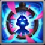
1re – Chronostase
Description en jeu : Arrête le temps pour tous les héros ennemis. Pendant 2.5 secondes, ils ne peuvent ni utiliser de compétences, ni se déplacer, ni esquiver les attaques, et leur Armure ainsi que leur Défense magique sont réduites de 27,241.65 (13% Mag.atk. + 1800). Pendant la durée de cette compétence, le temps de recharge de toutes les compétences ennemies concernées est gelé. Cette compétence augmente la durée de toutes les Malédictions et tous les Debuffs lancés sur les ennemis.
Explication de la compétence : Chronostase est l'ultime de Tempus et le cœur de tout son kit. Imaginez tous les ennemis du champ de bataille figés en même temps : pendant 2.5 secondes entières, ils ne peuvent ni bouger, ni utiliser leurs capacités, ni esquiver. Pendant cette fenêtre, votre équipe attaque librement sans aucune résistance. En plus de cela, les ennemis figés perdent aussi de l'Armure et de la Défense magique, ce qui leur fait subir bien plus de dégâts pendant ces précieuses secondes. Et ce n'est pas tout : cette compétence prolonge aussi la durée de TOUS les debuffs et malédictions déjà présents sur les ennemis. Si Iris ou Phobos a appliqué une malédiction, Chronostase la fera durer encore plus longtemps. Chaque combat devient alors une exécution chorégraphiée à la perfection.
Formule avec le Talisman de Pérennité
- Réduction d'Armure et de Défense magique : 27,241.65 (13% Mag.atk. + 1800)
Formule avec le Talisman de Ponctualité
- Réduction d'Armure et de Défense magique : 26,461.65 (13% Mag.atk. + 1800)
Informations sur l'animation de la compétence
- Réduction d'Armure et de Défense magique : (13% Mag.atk. + 1800)
- Mots-clés : Debuff, Contrôle
- Délai d'animation : 1.0 seconde
- Durée : 2.5 secondes
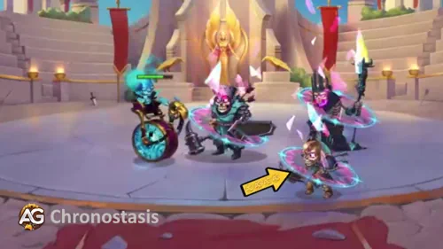
Priorité d'évolution : Très élevée – Chronostase est la première compétence que vous devriez améliorer chaque fois que vous avez des ressources. C'est la capacité de contrôle de foule la plus puissante du kit de Tempus : elle arrête toute l'équipe ennemie en même temps tout en gelant ses temps de recharge. Vos alliés obtiennent ainsi une fenêtre d'attaque gratuite, sans aucune riposte. La réduction d'Armure et de Défense magique pendant ces 2.5 secondes amplifie en plus tous les héros infligeant des dégâts magiques dans votre équipe, ce qui fait de cette amélioration l'investissement le plus impactant pour Tempus.
2e – Flétrissement
Description en jeu : Affaiblit les adversaires distants devant lui pendant 6.0 secondes. Les ennemis affaiblis perdent 24,370.5 (10% Mag.atk. + 4800) d'Attaque physique et 126,423 (60% Mag.atk. + 9000) de Santé maximale.
Explication de la compétence : Flétrissement est un debuff à double effet qui frappe les ennemis là où ça fait le plus mal. Il réduit simultanément leur Attaque physique, diminuant ainsi les dégâts subis par votre première ligne, et leur retire une énorme quantité de Santé maximale. Un héros qui semble avoir 600,000 de Santé mais qui en perd 126,000 est bien plus facile à achever qu'il n'y paraît. La réduction de Santé maximale est particulièrement puissante parce qu'elle se cumule avec les dégâts déjà infligés par votre équipe. Cette compétence se déclenche toutes les 12 secondes après les 8 premières et touche tous les ennemis distants devant Tempus dans une large zone. C'est un debuff fiable et fréquent qui maintient l'équipe ennemie durablement affaiblie pendant tout le combat.
Formule avec le Talisman de Pérennité
- Réduction d'Attaque physique : 24,370.5 (10% Mag.atk. + 4800)
- Réduction de Santé maximale : 126,423 (60% Mag.atk. + 9000)
Formule avec le Talisman de Ponctualité
- Réduction d'Attaque physique : 23,770.5 (10% Mag.atk. + 4800)
- Réduction de Santé maximale : 122,823 (60% Mag.atk. + 9000)
Informations sur l'animation de la compétence
- Réduction d'Attaque physique : (10% Mag.atk. + 4800)
- Réduction de Santé maximale : (60% Mag.atk. + 9000)
- Mots-clés : Debuff
- Temps de recharge initial : 8 secondes
- Temps de recharge : 12 secondes
- Délai d'animation : 1.0 seconde
- Durée : 6.0 secondes
- Zone : 200
- Portée : 3000
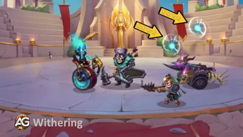
Priorité d'évolution : Élevée – Flétrissement est votre deuxième objectif d'amélioration après Chronostase. La combinaison d'une Attaque physique réduite et d'une Santé maximale amputée rend les ennemis bien plus faciles à éliminer, surtout lorsqu'elle est associée à la fenêtre d'attaque gratuite fournie par Chronostase. Plus vous investissez dans cette compétence, plus il devient difficile pour n'importe quel héros de première ligne de résister au burst de votre équipe. La réduction de Santé maximale seule dépasse les 126,000 avec une Attaque magique complète, ce qui est énorme dans un jeu où les héros possèdent 500,000 à 900,000+ points de Santé.
2e – Flétrissement (Compétence améliorée) Relique Légendaire : Niveau 10
Description en jeu : Applique désormais aussi un debuff à tous les ennemis devant lui.
Explication de la compétence : Avant cette amélioration, Flétrissement ne ciblait que les ennemis "distants", c'est-à-dire les héros placés plus loin de Tempus. Au Niveau 10 de Relique, la compétence touche maintenant TOUS les ennemis devant lui, y compris ceux qui sont proches. C'est une amélioration tactique importante : plus aucun ennemi de première ligne ou de ligne médiane n'échappe à la pénalité d'Attaque physique et de Santé maximale. Contre les équipes très regroupées ou qui utilisent des tanks à courte portée, cette amélioration garantit que tous les adversaires sont affaiblis simultanément toutes les 12 secondes, et pas seulement quelques-uns.
Informations sur l'animation de la compétence
- Condition : Relique Légendaire Niveau 10
- Mots-clés : Debuff
- Zone étendue : S'applique maintenant à tous les ennemis devant (et pas seulement aux lointains)
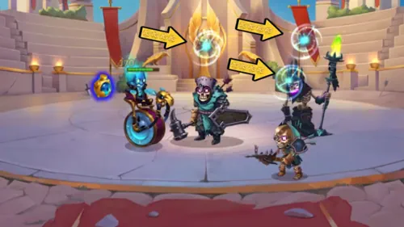
Priorité d'évolution : Élevée – C'est l'une des premières améliorations de Relique à prioriser. Étendre Flétrissement à tous les ennemis devant Tempus transforme un debuff situationnel en affaiblissement fiable à l'échelle de l'équipe. En PvP compétitif, où les ennemis sont souvent très serrés, cette amélioration garantit que Tempus punit toute la première ligne et la ligne médiane adverses chaque fois que Flétrissement se déclenche, et pas seulement ceux qui se trouvent assez loin de lui.
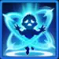
3e – Anomalie Temporelle
Description en jeu : Envoie le héros ennemi avec la plus haute Pénétration d'armure dans l'Anomalie Temporelle pendant 5.0 secondes. La cible est ralentie de 25%, perd 50 points d'énergie et subit 31,755.75 (15% Mag.atk. + 2400) de dégâts magiques par seconde.
Explication de la compétence : Anomalie Temporelle est le neutraliseur ciblé de Tempus. Au lieu de frapper tous les ennemis, cette compétence traque chirurgicalement l'attaquant le plus dangereux : le héros ayant la plus forte Pénétration d'armure. Il s'agit généralement d'un gros frappeur conçu pour déchirer votre tank, comme un guerrier ou un carry très offensif. Une fois attrapé, il est envoyé dans une boucle temporelle pendant 5 secondes : son mouvement est ralenti de 25%, il perd 50 points d'énergie chaque seconde, de quoi vider la barre d'énergie de la plupart des héros et empêcher leur ultime, et il subit des dégâts magiques constants tout au long de l'effet. Son temps de recharge initial n'est que de 1 seconde, ce qui signifie que Tempus l'utilise presque immédiatement au début du combat, protégeant ainsi votre première ligne dès les toutes premières secondes.
Formule avec le Talisman de Pérennité
- Dégâts magiques par seconde : 31,755.75 (15% Mag.atk. + 2400)
Formule avec le Talisman de Ponctualité
- Dégâts magiques par seconde : 30,855.75 (15% Mag.atk. + 2400)
Informations sur l'animation de la compétence
- Dégâts magiques par seconde : (15% Mag.atk. + 2400)
- Mots-clés : Dégâts sur la durée
- Temps de recharge initial : 1 seconde
- Temps de recharge : 14 secondes
- Délai d'animation : 0.7 seconde
- Durée : 5.0 secondes
- Portée : 3000
- Ralentissement : 25%
- Drain d'énergie : 50 par seconde
- Cible : Héros ennemi avec la plus haute Pénétration d'armure
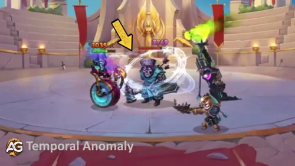
Priorité d'évolution : Élevée – Anomalie Temporelle est une amélioration de haute priorité, car elle neutralise automatiquement la plus grande menace physique pour votre équipe dès le début du combat. Le drain d'énergie seul, 50 d'énergie par seconde pendant 5 secondes, est dévastateur puisqu'il empêche l'attaquant le plus dangereux d'utiliser son ultime au moment le plus critique. Améliorez cette compétence régulièrement, et votre tank sentira immédiatement la différence : beaucoup moins de pression de la part du plus gros frappeur adverse.
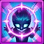
4e – Paradoxe Temporel
Description en jeu : Pendant 4.0 secondes, invoque une immense Horloge au centre de l'arène. Les ennemis dans la zone de l'Horloge sont ralentis, tandis que les alliés sont accélérés de 10%. La Santé maximale des alliés affectés est aussi augmentée de 146,593.5 (70% Mag.atk. + 9600).
Explication de la compétence : Paradoxe Temporel est une compétence de manipulation du champ de bataille qui affecte simultanément les deux équipes. Une énorme horloge apparaît au centre de l'arène : vos alliés se déplacent et attaquent plus vite (+10% de vitesse), tandis que les ennemis sont ralentis (-10% de vitesse). Mais la partie la plus marquante est l'énorme augmentation de Santé maximale pour tous les alliés : 146,593.5 (70% Mag.atk. + 9600). C'est la synergie clé avec Aidan : sa compétence Rituel du Phénix renforce les alliés en fonction de leur Santé maximale, ce qui signifie que plus votre équipe reçoit de Santé grâce à Paradoxe Temporel, plus le buff sacrificiel d'Aidan brûle l'ennemi avec force. Combiné à Kayla, le mécanisme de résurrection devient encore plus fiable. Chaque fois que Paradoxe Temporel se déclenche, votre équipe devient plus solide et plus rapide tandis que l'équipe ennemie se traîne au ralenti.
Formule avec le Talisman de Pérennité
- Augmentation de la Santé maximale des alliés : 146,593.5 (70% Mag.atk. + 9600)
- Augmentation de la vitesse des alliés / réduction de la vitesse des ennemis : 10%
Formule avec le Talisman de Ponctualité
- Augmentation de la Santé maximale des alliés : 142,393.5 (70% Mag.atk. + 9600)
- Augmentation de la vitesse des alliés / réduction de la vitesse des ennemis : 10%
Informations sur l'animation de la compétence
- Augmentation de la Santé maximale des alliés : (70% Mag.atk. + 9600)
- Mots-clés : Buff
- Temps de recharge : 16 secondes
- Délai d'animation : 1.0 seconde
- Durée : 4.0 secondes
- Zone : 270
- Portée : 3000
- Augmentation de la vitesse des alliés / réduction de la vitesse des ennemis : 10%
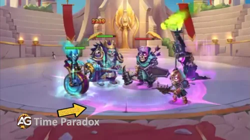
Priorité d'évolution : Élevée – Paradoxe Temporel est le moteur du rôle de soutien de Tempus. L'augmentation de Santé maximale évolue énormément avec l'Attaque magique, plus de 146,000 par activation avec un investissement complet, ce qui rend toute votre équipe nettement plus résistante à chaque déclenchement de la compétence. Si vous jouez Aidan, cette compétence devient encore plus cruciale, car la Santé maximale supplémentaire alimente directement les dégâts de brûlure du Rituel du Phénix. Ne la considérez pas comme optionnelle : c'est elle qui fait de Tempus un véritable Soutien, et pas seulement un héros de contrôle.
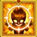
4e – Paradoxe Temporel (Compétence améliorée) Relique Légendaire : Niveau 20
Description en jeu : Désormais, tous les ennemis dans la zone de la compétence subissent des dégâts magiques toutes les 1 seconde. Dégâts magiques : 84,282 (40% Mag.atk. + 6000).
Explication de la compétence : Au Niveau 20 de Relique, Paradoxe Temporel devient une compétence totalement polyvalente. L'horloge continue d'augmenter la vitesse et la Santé de vos alliés tout en ralentissant les ennemis, mais elle inflige maintenant aussi des dégâts magiques de zone à tous les ennemis dans sa portée toutes les 1 seconde. Comme l'horloge dure 4 secondes, les ennemis pris à l'intérieur peuvent subir jusqu'à 4 impacts de 84,282 (40% Mag.atk. + 6000) dégâts magiques chacun. Combinés au debuff de Flétrissement, à la réduction d'Armure de Chronostase et au Champ Chrono avec sa Pénétration magique, ces impacts deviennent terriblement efficaces. Un adversaire déjà affaibli, gelé et ralenti finit par s'effondrer sous cette pression supplémentaire.
Formule avec le Talisman de Pérennité
- Dégâts magiques par tic (toutes les 1 s) : 84,282 (40% Mag.atk. + 6000)
Formule avec le Talisman de Ponctualité
- Dégâts magiques par tic (toutes les 1 s) : 81,882 (40% Mag.atk. + 6000)
Informations sur l'animation de la compétence
- Dégâts magiques par tic : (40% Mag.atk. + 6000)
- Condition : Relique Légendaire Niveau 20
- Mots-clés : Buff, Dégâts magiques
- Intervalle de dégâts : 1.0 seconde
- Durée : 4.0 secondes (jusqu'à 4 impacts au total)
- Zone : 270
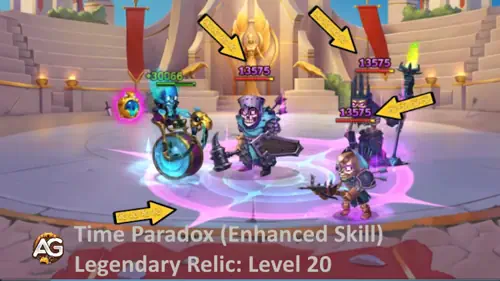
Priorité d'évolution : Élevée – Cette amélioration transforme Paradoxe Temporel d'une compétence de soutien pur en une véritable machine à dégâts. Ajouter des dégâts magiques de zone à la manipulation de vitesse et à l'augmentation de Santé déjà existantes permet à Tempus de contribuer de manière significative aux éliminations, même lors de combats prolongés contre des adversaires résistants. Si vos ennemis ont tendance à survivre trop longtemps malgré votre chaîne de contrôle, cette amélioration est la solution. Visez le Niveau 20 de Relique, et vous verrez Tempus convertir ses fenêtres de contrôle en éliminations nettes avec bien plus de régularité.
5e – Champ Chrono (Nouvelle compétence) Relique Légendaire : Niveau 1
Description en jeu : Toutes les 15 secondes, crée une aura autour de Tempus pendant 4.0 secondes, augmentant la Pénétration magique de 39,141 (20% Mag.atk.) pour lui et tous les alliés présents dans la zone.
Explication de la compétence : Champ Chrono est l'une des récompenses les plus excitantes du système de Relique Légendaire, et elle s'active dès que vous atteignez le Niveau 1 de Relique, ce qui signifie que vous l'obtenez immédiatement sans investissement supplémentaire. Toutes les 15 secondes, une aura apparaît automatiquement autour de Tempus, augmentant sa Pénétration magique ainsi que celle de tous les alliés proches. La Pénétration magique est incroyablement puissante en jeu compétitif, car elle ignore une partie de la Défense magique ennemie et permet à vos compétences magiques d'infliger beaucoup plus de dégâts. Si vous jouez des héros comme Iris, Phobos ou Xe'Sha, cette aura rend toutes leurs compétences nettement plus percutantes durant cette fenêtre de 4 secondes. Comme elle se déclenche passivement tout au long du combat sans consommer d'énergie, elle agit comme un amplificateur de dégâts gratuit et constant pour toute votre équipe.
Formule avec le Talisman de Pérennité
- Bonus de Pénétration magique : 39,141 (20% Mag.atk.)
Formule avec le Talisman de Ponctualité
- Bonus de Pénétration magique : 37,941 (20% Mag.atk.)
Informations sur l'animation de la compétence
- Bonus de Pénétration magique : (20% Mag.atk.)
- Condition : Relique Légendaire Niveau 1
- Mots-clés : Buff
- Intervalle de déclenchement : Toutes les 15 secondes (automatique)
- Durée : 4.0 secondes
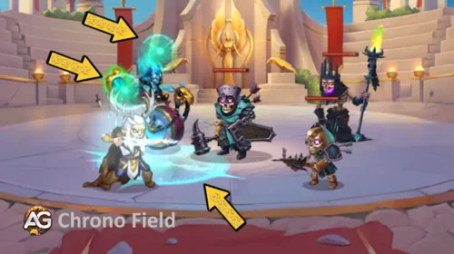
Priorité d'évolution : Élevée – Champ Chrono se débloque au moment où vous investissez votre tout premier point de Relique dans Tempus, ce qui en fait un bonus immédiat et gratuit. Dans les équipes orientées magie, l'aura de Pénétration magique qu'il procure signifie que chaque sort lancé pendant cette fenêtre de 4 secondes inflige sensiblement plus de dégâts à tous les niveaux. Comme elle se déclenche automatiquement toutes les 15 secondes sans nécessiter d'énergie, il s'agit essentiellement d'une passive gratuite qui multiplie l'efficacité de chaque mage de votre équipe pendant tout le combat.
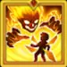
6e – Rebond Temporel (Nouvelle compétence) Relique Légendaire : Niveau 30
Description en jeu : Applique la compétence Chronostase pendant 2.5 secondes à l'ennemi qui inflige un effet de Contrôle à Tempus.
Explication de la compétence : Rebond Temporel est la défense passive ultime. Tout héros ennemi qui tente d'étourdir, de réduire au silence, de geler ou de contrôler Tempus d'une manière quelconque reçoit immédiatement Chronostase en retour, ce qui signifie qu'il ne peut ni bouger, ni utiliser de compétences, ni esquiver pendant 2.5 secondes. Réfléchissez à ce que cela signifie concrètement : un héros comme Judge qui réduit Tempus au silence en espérant le neutraliser se retrouve lui-même gelé et privé de tout accès à ses compétences. Cela inverse complètement la dynamique du contre-jeu. Au lieu que les contrôleurs ennemis représentent une menace pour Tempus, ils deviennent un handicap pour leur propre équipe. Plus vos adversaires reposent sur le contrôle, plus Rebond Temporel devient dévastateur. Il transforme l'une des faiblesses les plus courantes des héros de soutien en véritable force.
Informations sur l'animation de la compétence
- Condition : Relique Légendaire Niveau 30
- Mots-clés : Passive
- Déclenchement : Tout ennemi inflige un effet de Contrôle à Tempus
- Durée de la Chronostase appliquée : 2.5 secondes
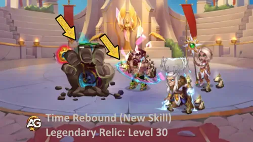
Priorité d'évolution : Élevée – Rebond Temporel récompense un engagement total dans la voie complète de la Relique Légendaire. Au Niveau 30 de Relique, il rend Tempus presque impossible à neutraliser : tout ennemi qui essaie de le contrôler reçoit immédiatement sa signature Chronostase en retour. En PvP compétitif, en Grande Arène et dans les métas riches en contrôle où des héros comme Judge, Thea ou Octavia sont fréquents, cette passive change complètement le déroulement du combat. Plus vos adversaires reposent sur le contrôle, plus Tempus devient puissant.
Meilleur skin pour Tempus Hero Wars Alliance
L'évolution des skins de Tempus est essentielle pour maximiser son rôle de soutien axé sur le contrôle temporel. Chaque skin apporte des avantages distincts, allant d'une Attaque magique dévastatrice à une meilleure survivabilité et à plus de polyvalence dans différents scénarios de combat.

Skin Cybernétique
Attaque magique +10,650
Priorité d'évolution : 1re – Très élevée – Ce skin offre le plus gros bonus direct d'Attaque magique, ce qui le place à égalité avec le Skin Stellaire en termes de dégâts bruts. Le Skin Cybernétique amplifie les capacités de contrôle de Tempus comme Chronostase et Anomalie Temporelle, lui permettant d'infliger des dégâts dévastateurs tout en contrôlant le champ de bataille. Cela doit être votre priorité absolue si vous voulez maximiser son potentiel offensif de soutien.

Skin Stellaire
Attaque magique +10,650
Priorité d'évolution : 1re – Très élevée – Ce skin offre une augmentation directe et importante de l'Attaque magique, avec le même rendement brut que le Skin Cybernétique. Les deux skins ont exactement la même valeur pour maximiser le potentiel offensif et l'impact de soutien de Tempus, surtout lorsqu'il est associé à des mages burst comme Iris ou Polaris. Choisissez l'un ou l'autre selon votre préférence esthétique parmi ces options de premier rang.

Skin par défaut
Intelligence +1,365
Priorité d'évolution : 2e – Élevée – L'Intelligence augmente l'Attaque magique (+4,095), la Défense magique (+1,365) et contribue légèrement à l'Attaque physique (+1,365). Même si ce skin offre moins de dégâts bruts que le Skin Cybernétique ou le Skin Stellaire, il améliore à la fois les aspects offensifs et défensifs du kit de Tempus, ce qui en fait un excellent second choix. Il renforce toutes ses compétences et l'aide à tenir plus longtemps dans les combats face à des équipes orientées magie.

Skin Lunaire
Santé +106,645
Priorité d'évolution : 3e – Moyenne à élevée – En tant que héros de ligne médiane, Tempus peut être exposé aux dégâts de zone et aux attaques burst. Le bonus de Santé de ce skin améliore sa survie et garantit qu'il pourra appliquer son contrôle de foule et ses debuffs avec régularité. Priorisez ce skin si Tempus se fait éliminer trop tôt dans les combats.

Skin Ange+
Armure +21,300
Priorité d'évolution : 4e – Moyenne – L'Armure aide à réduire les dégâts physiques, ce qui est utile contre des héros comme Dante ou Keira. Cependant, comme Tempus n'est pas habituellement ciblé par les attaques physiques monocibles et qu'il occupe déjà la ligne médiane, ce skin reste situationnel et offre la plus faible valeur globale.
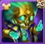
Skin Flamme de Jade
Défense magique +10,650
Priorité d'évolution : 5e – Faible – La Défense magique aide à réduire les dégâts magiques, ce qui est utile contre des héros comme Folio ou Polaris. Cependant, comme Tempus n'est pas habituellement ciblé par les attaques magiques monocibles et qu'il occupe déjà la ligne médiane, ce skin est situationnel et offre la plus faible valeur globale.
Priorité d'évolution des artéfacts de Tempus Hero Wars Alliance

Tempus utilise trois artéfacts puissants qui améliorent ses dégâts magiques, sa survivabilité et ses capacités de soutien d'équipe. Chaque artéfact apporte des avantages distincts qui se combinent pour maximiser son efficacité dans les stratégies de soutien fondées sur le contrôle temporel.

Chronoroue (Arme)
Attaque magique +32,040
Priorité d'évolution : 1re – Très élevée – C'est l'artéfact principal de Tempus et il doit être votre priorité absolue. Chronoroue fournit le plus gros bonus direct d'Attaque magique (+32,040), amplifiant fortement les dégâts de ses compétences Chronostase et Anomalie Temporelle. De plus, il se déclenche avec l'ultime de Tempus, accordant de puissants bonus de statistiques à toute votre équipe pendant 9 secondes, ce qui le rend inestimable pour les poussées offensives coordonnées et les synergies d'équipe.

Tome du savoir arcanique (Livre)
Attaque magique +10,680 / Santé +53,394
Priorité d'évolution : 2e – Élevée – Cet artéfact offre un excellent équilibre entre puissance offensive et capacités défensives. Le bonus d'Attaque magique (+10,680) renforce ses dégâts, tandis que l'augmentation importante de Santé (+53,394) améliore sa survie sur la ligne médiane. Cette combinaison garantit que Tempus peut rester présent dans les combats prolongés tout en continuant à appliquer ses compétences de contrôle sans se faire éliminer prématurément.

Anneau d'intelligence (Anneau)
Intelligence +3,990
Priorité d'évolution : 3e – Moyenne – L'Intelligence offre une évolution polyvalente en convertissant +3,990 d'Intelligence en Attaque magique (+11,970), Défense magique (+3,990) et Attaque physique (+3,990). Même s'il apporte moins de dégâts magiques bruts que Chronoroue ou le Tome du savoir arcanique, cet artéfact améliore la stabilité générale et fournit des bénéfices multi-statistiques. Priorisez-le après les deux premiers pour compléter pleinement l'optimisation du kit de soutien de Tempus.
Priorité d'évolution des glyphes de Tempus Hero Wars Alliance
La stratégie d'évolution des glyphes de Tempus vise à maximiser sa survie et sa production magique afin de soutenir durablement son rôle de soutien orienté contrôle temporel. Chaque glyphe offre des avantages distincts qui renforcent son efficacité au combat selon ses besoins défensifs et offensifs.

Santé
Statistiques au niveau 80 : Santé +122,800
Priorité d'évolution : 1re – Très élevée – La Santé est votre priorité absolue. En tant que héros de soutien de ligne médiane, Tempus a besoin d'une résistance exceptionnelle pour conserver sa présence sur le champ de bataille durant les combats prolongés. Le bonus substantiel de +122,800 de Santé garantit qu'il peut appliquer ses capacités de contrôle de foule avec régularité, absorber les dégâts de zone entrants et survivre aux attaques burst sans être éliminé trop tôt. C'est le fondement de son efficacité comme unité de soutien.

Attaque magique
Statistiques au niveau 80 : Attaque magique +12,850
Priorité d'évolution : 1re – Très élevée – L'Attaque magique est tout aussi cruciale pour maximiser les capacités offensives de Tempus. Le bonus de +12,850 amplifie directement les dégâts de Chronostase, Anomalie Temporelle et Paradoxe Temporel, le transformant d'un soutien de contrôle pur en un véritable infligeur de dégâts. Cela lui permet de capitaliser sur les fenêtres qu'il crée grâce à son contrôle de foule, en infligeant d'importants dégâts tout en dominant le champ de bataille.

Défense magique
Statistiques au niveau 80 : Défense magique +12,850
Priorité d'évolution : 2e – Élevée – La Défense magique est votre deuxième priorité, car elle fournit une réduction essentielle contre les dégâts magiques des mages ennemis et des héros burst. Le bonus de +12,850 aide Tempus à résister aux menaces magiques fréquentes des équipes compétitives. Même si des coéquipiers comme Morrigan apportent soins et soutien, réduire les dégâts magiques entrants se traduit directement par moins de soins nécessaires et une présence prolongée en combat.

Armure
Statistiques au niveau 80 : Armure +12,850
Priorité d'évolution : 3e – Moyenne à élevée – L'Armure fournit une réduction des dégâts physiques avec +12,850, ce qui a une valeur situationnelle contre les équipes fortement axées sur les dégâts physiques. Cependant, la position de Tempus en ligne médiane signifie qu'il est moins souvent ciblé par des attaques physiques monocibles que les héros de première ligne. Priorisez ce glyphe après la Santé, l'Attaque magique et la Défense magique, principalement contre des équipes affrontant de gros dégâts physiques comme ceux de Dante ou Keira.

Intelligence
Statistiques au niveau 80 : Intelligence +2,110
Évolution : +6,330 Attaque magique / +2,110 Défense magique / +2,110 Attaque physique
Priorité d'évolution : 4e – Moyenne – L'Intelligence offre une évolution polyvalente multi-statistique en convertissant +2,110 d'Intelligence en bonus offensifs et défensifs. Même si cette évolution est correcte, les contributions individuelles restent inférieures à celles des glyphes spécialisés. Priorisez l'Intelligence en dernier, car le glyphe plat de +12,850 d'Attaque magique apporte une meilleure valeur offensive, tandis que les glyphes défensifs dédiés offrent une protection plus ciblée.
Synergies
Tempus fonctionne exceptionnellement bien avec les héros de la Voie de l'Éternité, mais il est particulièrement redoutable lorsqu'il est associé à :
- Iris : les capacités de debuff d'Iris complètent la manipulation temporelle de Tempus. Lorsque Tempus utilise sa compétence Chronostase, il renforce les effets des debuffs d'Iris en prolongeant leur durée.
- Phobos : la compétence de Malédiction de Phobos, qui réduit l'efficacité ennemie, devient encore plus meurtrière lorsqu'elle est combinée aux compétences de Tempus qui ralentissent et affaiblissent les adversaires.
- Xe'Sha et Celeste : ces puissantes mages bénéficient des capacités de manipulation temporelle de Tempus, ce qui leur permet de déchaîner une magie dévastatrice pendant que les ennemis sont ralentis et incapables de se défendre.
- Morrigan – Soutient Tempus avec des soins et des bonus de dégâts, l'aidant à rester en vie sur les lignes avancées.
- Nebula – Augmente l'Attaque magique de Tempus grâce à ses buffs, le rendant beaucoup plus dangereux.
- Dante – Protège Tempus des gros dégâts burst tout en aidant à contrôler les déplacements ennemis.
- Kayla et Aidan – Kayla et Aidan profitent de l'augmentation de Santé maximale, du contrôle et de la réduction de dégâts apportés par Tempus, ce qui leur permet de survivre plus longtemps.
Meilleures équipes de Tempus dans Hero Wars Alliance
| Équipes de Tempus testées sur YouTube |
|---|
| Octavia, Iris, Tempus, Dante, Corvus |
| Phobos, Iris, Tempus, Dante, Corvus |
| Aidan, Xe'Sha, Jorgen, Tempus, Astaroth |
| Astrid, Isaac, Tempus, Judge, Julius |
| Octavia, Iris, Nebula, Tempus, Dante |
| Octavia, Iris, Heidi, Tempus, Dante |
| Iris, Heidi, Nebula, Tempus, Dante |
| Dorian, Iris, Nebula, Tempus, Dante |
| Faceless, Morrigan, Tempus, Karkh, Corvus |
| Faceless, Iris, Morrigan, Tempus, Corvus |
| Phobos, Faceless, Morrigan, Tempus, Corvus |
| Aidan, Faceless, Xe'Sha, Tempus, Mushy |
| Aidan, Xe'Sha, Celeste, Tempus, Mushy |
| Martha, Aidan, Xe'Sha, Tempus, Mushy |
Conclusion du guide Tempus
Tempus est un héros de soutien polyvalent et puissant dans Hero Wars Alliance, qui excelle dans le contrôle du champ de bataille et l'amplification des dégâts de son équipe. Ses capacités uniques de manipulation temporelle lui permettent de ralentir les ennemis, de renforcer les alliés et même de renvoyer contre les adversaires leurs propres tentatives de contrôle. Avec les bons investissements en skins, artéfacts et glyphes, Tempus peut devenir un atout indispensable aussi bien en PvP qu'en PvE. En l'associant à des héros synergiques comme Iris, Phobos et Xe'Sha, vous maximiserez son potentiel et dominerez vos adversaires.
Suggestion de vidéo
Explorez de nouvelles compétences avec nos guides à la une


Laissez votre avis !
Avez-vous aimé notre guide Tempus pour Hero Wars Alliance ? Y a-t-il quelque chose que vous n'avez pas compris ou que vous aimeriez voir modifié ? Nous vous invitons à rejoindre notre section de commentaires sur la page du blog Alexandre Games. N'hésitez pas à exprimer votre opinion, à clarifier vos doutes et à partager vos suggestions.
Cliquez sur le bouton ci-dessous pour commencer :